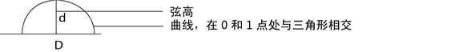

使用这些选项可查看在选择“渲染 > 设置 NURBS 细分”(Render > Set NURBS Tessellation) > 时发生的情况。
通过设置选项：
- Maya 可以在整个动画范围内自动优化 NURBS 曲面细分（从“细分模式”(Tessellation Mode)列表中选择“自动”(Automatic)（默认值））。
此方法对于摄影机和对象之间的距离发生更改（动画）的场景非常有效，由于防止了过度细分，从而可以节省内存（和时间）并提高性能。
- 对于需要使用非默认设置的对象，可以手动调整细分（从“细分模式”(Tessellation Mode)列表中选择“手动”(Manual)）。
- 应用细分(Apply Tessellation)
-
可用于更改“选定曲面”(Selected Surfaces)的细分属性，或同时更改“所有曲面”(All Surfaces)的细分属性。默认情况下“选定曲面”(Selected Surfaces)处于启用状态。
细分模式(Tessellation Mode)
Maya 可以依据对象和可渲染摄影机间的距离自动设定最佳细分设置，或者由您进行设定。
若要调整细分设置，需要切换到“手动”(Manual)模式。
使用“自动”(Automatic)细分模式前，请在渲染设置(Render Settings)窗口中设定所需的分辨率。Maya 使用“分辨率”(Resolution)设置来确定所需的细分级别，以避免面状化。
- 自动(默认) (Automatic (default))
-
细分取决于曲面的覆盖范围、曲面和摄影机间的距离以及“自动”(Automatic)模式设置。
接近摄影机的对象或占用大量屏幕空间的对象会自动用更多三角形进行细分。离摄影机的距离较远的对象或较小的对象具有较少的三角形。
如果对曲面或摄影机进行了动画设置，那么 Maya 会考虑距离随时间的变化，并按“使用帧范围”(Use Frame Range)中设定的帧范围计算细分。对每一帧的细分进行求值和优化，然后确定并应用最坏情况细分方案要求。
自动模式下，可以计算出当前帧或渲染设置或时间滑块设定的帧范围的细分。
- 手动(Manual)
-
细分取决于您在“手动”(Manual)模式下选择的是“基本”(Basic)还是“高级”(Advanced)。这等同于打开每个曲面的“属性编辑器”(Attribute Editor)，然后设定细分设置。
自动模式(Automatic Mode)设置
将会显示部分设置，而且这些设置也适用于“手动”(Manual)模式下的“基本”(Basic)设置。
使用帧范围(Use Frame Range)
仅在“自动”(Automatic)（默认值）模式下可用。
由“自动”(Automatic)细分计算的细分取决于曲面和摄影机之间的距离。如果对曲面或摄影机进行了动画设置，此关系随时间而更改。
通常，当曲面最接近摄影机时，需要最佳细分（最多三角形）。如果知道当前是什么帧，请使用“当前帧”(Current Frame)。否则，Maya 通过预备运行指定帧范围的动画进行计算，对每个帧的细分进行求值并设定细分属性，以提供最佳细分。
Maya 窗口左下角的进度栏指示预备运行进度。也可以按 Esc 键中断预备运行的细分求值。中断过程中，设定了细分值，且这些值在被中断的帧之前均有效。
- 渲染设置
-
Maya 使用“渲染设置”(Render Settings)窗口中设定的帧范围。
- 时间滑块(Time Slider)
-
按需要使用时间滑块来调整帧范围。
- 当前帧(Current Frame)
-
对当前帧的最佳细分进行求值。
使用以下项计算(Compute From)
仅在“自动”(Automatic)（默认值）模式下可用。
- 所有可渲染摄影机(All Renderable Cameras)
-
默认值。从所有可渲染摄影机的视点计算自动细分。
- 当前视图(Current View)
-
仅从当前视图计算自动细分。
曲率容差(Curvature Tolerance)
可以确定细分面状化所需的平滑度。如果调整此设置，Maya 会自动设置“弦高比”(Chord Height Ratio)（一个隐藏的“高级”(Advanced)设置，但是在“自动”(Automatic)（默认值）模式和“手动”(Manual)模式下均会自动设置此项）。
在含有大量小对象的更复杂场景中，将较小对象设定为“低质量”(Low Quality)。（此表仅适用于手动模式；自动模式设定弦高，弦高取决于距摄影机的距离。）
- 低质量(Low Quality)
-
弦高比 = 0.987
- 中等质量(默认) (Medium Quality (default))
-
可能会出现部分面状化，但多边形的计数明显较少。弦高比 = 0.990
- 高质量(High Quality)
-
弦高比 = 0.994。
- 最高质量(Highest Quality)
-
结果是形成了非常平滑的边，而且没有面状化。弦高比 = 0.995。
- 不检查曲率(No Curvature Check)
-
未尝试将面状化平滑处理掉，且只对细分进行了初始采样。
- U 分段因子(U Division Factor)、V 分段因子(V Division Factor)
-
在调整这些设置之前，调整“曲率容差”(Curvature Tolerance)以获得想要的结果。
如果调整此设置，Maya 会自动将这些值与“每个曲面的 3D 等参线数”(Per surf # isoparms in 3D)（一个隐藏的“高级”(Advanced)设置，但是在“自动”(Automatic)（默认值）模式和“手动”(Manual)模式下均会自动设置此项）相乘。
值越高，产生的多边形越多。“U 向分段因子”(U Divisions Factor)和“V 向分段因子”(V Divisions Factor)属性应包含大致相同的值。
- 使用平滑边(Use Smooth Edge)
-
使用该选项可以仅沿对象的边界增加三角形数。这使得您可以对边进行平滑处理或者防止相邻曲面的共享曲线之间产生裂缝，同时无需对整个对象进行细分，因为细分整个对象需要较长的渲染时间。
比率越高，边越平滑，多边形的计数就越大。
如果沿接近边的曲面的曲线部分出现高光瑕疵，请勿使用该属性。
- 平滑边比率(Smooth Edge Ratio)
-
根据需要在沿曲面边的曲率区域添加更多三角形。该边为 NURBS 曲面的边界，其中一个 U 向或 V 向参数呈现其最大极端值。（根据从摄影机中查看对象的方式，这并未涉及轮廓边。）
虽然主要是沿边添加额外的三角形，但是还应根据需要将部分三角形添加到曲面内部，以防止曲面内 T 交叉处出现裂缝。
比率是细分三角形和边界曲线的长度之比。
- 边交换(Edge Swap)
-
有助于将四边形曲面跨度划分进最佳三角形，方法是交换用于创建三角形的四边形的两个顶点。这是一个次级标准，但是使用的资源最少。
手动模式(Manual Mode)
选择下列选项之一：
- 基本(Basic)
-
选择该选项时显示基本设置。有关这些设置的说明，请参见“自动”(Automatic)模式设置。
调整“基本”(Basic)设置时，Maya 会自动设置“高级”(Advanced)设置（为简明起见已隐藏），如下所示（有关详细信息，请参见“高级细分”(Advanced Tessellation)设置）：
- 高级(Advanced)
-
选择该选项时显示高级设置。有关这些设置的说明，请参见“高级细分”(Advanced Tessellation)设置。
高级细分(Advanced Tessellation)设置
仅在“手动”(Manual)模式下选定“高级”(Advanced)选项时可用。如果（在“自动”(Automatic)（默认值）模式或“手动”(Manual)/“基本”(Basic)模式下）已将“曲率容差”(Curvature Tolerance)设置为最高设置，而对象仍然不够平滑，请使用这些设置以对细分进行更好地控制。
U 向模式(Mode U)、V 向模式(Mode V)
这些是“主细分”(Primary Tessellation)属性（请参见主细分和次细分过程）。这些设置指示 Maya 如何细分曲面。U 值和 V 值表示 NURBS 曲面的 U 向和 V 向参数化尺度。可以设定不同的值，以生成曲面各个方向的细分。
- 每个曲面的等参线数
-
忽略曲面跨度数，并允许您指定要创建的细分数。结果是曲面上的等参线数比跨度数更稀疏。基本上，该设置假设一切均为等间距分布。
- 3D 中每个曲面的等参线数(Per Surf # of Isoparms in 3D)
-
“每个曲面的等参线数”(Per Surf # of Isoparms)相同，但是尝试在 3D 空间（而不是参数化空间）等间距分布等参线。有助于转化“NURBS 到多边形”(NURBS to polygons)。相比较于其他模式，该模式会生成更均匀分布的三角形。
- 每个跨度的等参线数(Per Span # of Isoparms)
-
这是最常用的模式。无论跨度大小如何，将每个跨度划分至相同的细分数。非常小的跨度被划分至与非常大的跨度相同的细分数。默认设置为 3。每个跨度设置有助于防止跨度匹配的连接曲面之间产生裂缝，这对于使用多个曲面构建角色尤为重要。
- 基于屏幕大小的最佳推测(Best Guess Based on Screen Size)
-
围绕 NURBS 曲面创建一个边界框，将其投影到屏幕空间，然后计算空间内的像素数。Maya 使用该数字来推测“每个曲面的等参线数”(per surface # of isoparms)。最大值为 40。该模式下，对象使用的屏幕空间越多，值越大。
如果摄影机或对象正在移动中，那么该模式不适用于动画，因为边界框会不断变更。如果边界框发生更改，那么细分和纹理抖动也会随着变更。（可能还会出现高光问题。）
注：如果具有复杂的 NURBS 曲面，并启用了“显示渲染细分”(Display Render Tessellation)，那么该设置可能会延迟显示更新，请耐心等待。
- U 向数量(Number U)、V 向数量(Number V)
-
实际值与“U 向模式”(Mode U)、“V 向模式”(Mode V)相关。
- 使用弦高(Use Chord Height)
-
打开该选项以启用“弦高”(Chord Height)滑块值。
注：可以使用“弦高”(Chord Height)、“弦高比”(Chord Height Ratio)或“最小屏幕”(Min Screen)选项，但不能使用这些选项的组合。
- 弦高(Chord Height)
-
弦高是基于对象空间单位物理测量；是三角形边的中心到定义曲面的曲线的垂直距离。如果测量所得的实际距离大于该“弦高”(Chord Height)值，请细分三角形。细分后对照相同的标准再次检查，继续这一过程直至符合标准。在“对象空间”(Object Space)中测量“弦高”(Chord Height)。默认值为 0.1。
“弦高”(Chord Height)基于默认单位，由于较小模型的弦高值更小，因而其并不总是适用于非常小的模型。
对弦高进行计算时，只要有任何值大于 0.1，Maya 将细分三角形，然后重新计算。继续这一细分过程直至所有三角形都符合标准。弦高较小，三角形与曲面的曲线越近似。（这对于关注模型相对于原型模型精确度的工业设计师可能比较有用。）
注：请勿构建太小的模型。在对象空间中测量弦高。如果在极小比例上构建模型，然后将其放大，弦长始终相对于对象而不是“世界空间”(World Space)，这意味着小对象的细分标准可能非常昂贵。对于较小对象或被缩放的对象，请选择“弦高比”(Chord Height Ratio)。
指定从实际的 NURBS 曲面到细分跨度中心可能的最大距离。
- 使用弦高比（Use Chord Height Ratio）
-
打开该选项以启用“弦高比”(Chord Height Ratio)滑块值。
- 弦高比(Chord Height Ratio)
-
指定跨度长度和实际的 NURBS 曲面到跨度中心的距离的最大比率。
取三角形相交于曲面的两个点之间的弦高 (d) 和距离 (D) 的比率，然后用 1 减去该比率，如以下等式所示：
“弦高比”(Chord Height Ratio) = 1 - d/D
“弦高比”(Chord Height Ratio)值大于等于 0.997 将会生成非常平滑的细分曲面。默认值为 0.9830，这意味着相比较于 D，d 非常小（例如，0.9830 = 1 - d/D）。越接近 1，三角形与曲面的拟合越紧密（最适用于动画。）
- 使用最小屏幕(Use Min Screen)
-
打开该选项以启用“最小屏幕”(Min Screen)框。
注：- 可以使用“弦高”(Chord Height)、“弦高比”(Chord Height Ratio)或“最小屏幕”(Min Screen)选项，但不能使用这些选项的组合。
- 对于动画期间正移向或远离摄影机的曲面，请勿启用“使用最小屏幕”(Use Min Screen)。“最小屏幕”(Min Screen)会导致细分随时间发生更改，还可能导致不需要的置换或纹理“弹出”。
- 最小屏幕(Min Screen)
-
细分基于最小屏幕大小（默认情况下为 14 像素）。细分过程中创建的所有三角形都必须适配该屏幕大小。如果不适配，对其进行进一步细分，直到适配为止。此选项适用于设置为 11.0 的静态图像。不建议对动画采用该选项，因为对象移动时细分会不断更改，从而导致纹理抖动或跳动，这是由于对特定像素进行着色时需要在每一帧上处理不同的细分产生的。
注：如果具有复杂的 NURBS 曲面，并启用了“显示渲染细分”(Display Render Tessellation)，那么该设置可能会延迟显示更新，请耐心等待。
依据曲面距摄影机的距离对曲面进行细分，并使用屏幕空间（而不是对象或世界空间）来确定所需的细分数。
所有三角形都必须适配指定的区域。默认值为 14 像素，这意味着所有三角形必须适配屏幕的 14x14 像素区域。对不符合该标准的三角形进行反复细分，直到其适合指定的区域。设定的值越低，三角形一定越小，这样才能符合标准。降低该值会显著增加内存，因此请慎用。